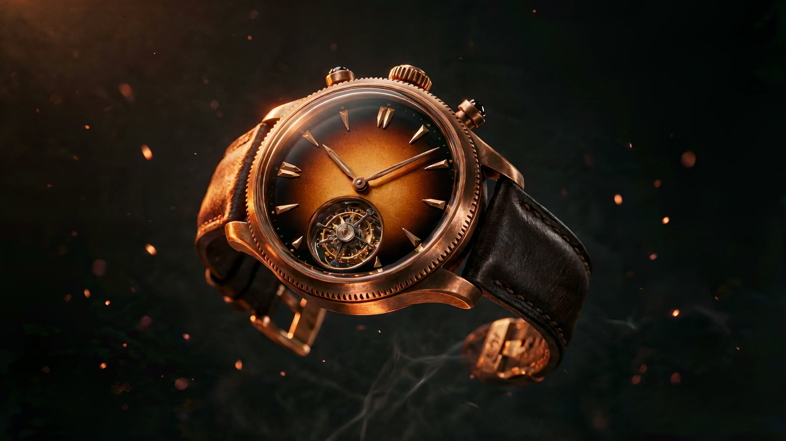

Chapitre I — La Maison
Born
of Fire
Bronze is poured, not chosen. At eleven hundred degrees it forgets every shape it has ever held — and remembers only the hand that pours it. In our atelier above the Rhône, each Solstice case begins as a crucible of molten alloy and ends, nine weeks later, as a watch that will never be repeated.
The metal is cast, forged, brushed and then abandoned — deliberately — to the air of the valley. Oxygen does what no guillocheur can: it writes a patina that belongs to one case alone. Your Solstice is not finished when it leaves us. It is finished when you are.